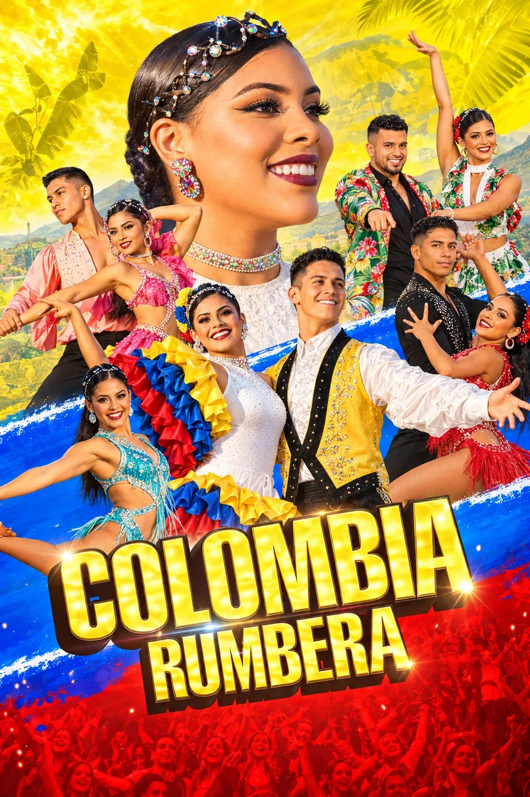

01
Sahne şovları40 dakika
MARMARİS · ENTERTAINMENT & EVENTS
Gündüzdengeceye.
Otel ve resortlar için
sezonluk şov programları.Gündüz partilerinden gece performanslarına.
Marmaris, Türkiye
BİRLİKTE AYNI ENERJİ
Referanslarımız.


TESİSİNİZDE BİR GÜN
ÖRNEK AKIŞ11:00 / HAVUZ BAŞIGüneşle başlar.
Güneşle başlar.
Ritimle devam eder.
Pink Pool Party ile havuz başında müzik, dans ve yaz enerjisi.
Örnek saatler tesisinize göre uyarlanır.TEMSİLİ GÖRSELLER
SEZONU BİRLİKTE KURALIM
01 HAFTA / 07 GECEBir hafta,
yedi farklı gece.
Dans, akrobasi, canlı müzik ve tema partilerini buluşturan örnek bir hafta. Otelinizin programına göre birlikte değiştirelim.
02
Canlı müzik120 dakikaSalı
03
Sahne şovları40 dakikaÇarşamba
04
Sahne şovları40 dakikaPerşembe
05
Canlı müzik120 dakikaCuma
06
Tema partileriKonsept programCumartesi
07
Sahne şovları40 dakikaPazar
Örnek programdır. Tarih, ekip uygunluğu ve teknik koşullar birlikte netleştirilir.
2026 KOLEKSİYONU
33 PROGRAM / 05 KATEGORİHer sahnede
başka bir enerji.
Canlı müzikten akrobasiye, havuz başından çocuk festivallerine. Kendi programınızı keşfedin; tanıtımları burada izleyin.
Bu aramaya uygun program bulunamadı.
Yeni bir enerji keşfet
Different cultures.
Same energy.
Katalog görselleri tanıtım amaçlıdır; sahne kurulumu değişebilir.Şov seçimi, tarih ve sahne koşullarına göre planlanır.
TEMA GECELERİ
BİR GECE, BİR HİKÂYEBir konsept.
Birlikte akan gösteriler.
Katalogdan bir araya getirdiğimiz iki gece önerisi. Seçkiyi taslağınıza ekleyin; akışı ve prodüksiyonu birlikte planlayalım.

Konsept önerisiLatin Gecesi
Latin dansından partiye.
Colombia Rumbera’nın dans gösterisini White Party ile devam eden bir akşamda buluşturan program önerisi.
 Konsept önerisi
Konsept önerisiAfrika Gecesi
Akrobasiyle yükselen bir gece.
Kenyan Acrobats ve African Warriors gösterilerini aynı gecenin akışında değerlendiren bir sahne seçkisi.
Bunlar örnek birleşimlerdir. Müzik, dekor, gösteri sırası, süre ve ekip uygunluğu tesisinize göre netleştirilir.
HİZMETLERİMİZ
GECEFikrinize ritim.
Etkinliğinize karakter.
01Oteller & Resortlar
SEZON BOYUNCA
Haftalık rotasyonla her akşam farklı bir gösteri. Dans şovları, canlı müzik, kültür geceleri ve tema partilerini tesisinizin misafir profiline ve sezonun temposuna göre bir araya getiriyoruz.
02Pool Partileri
GÜNDÜZ PROGRAMLARI
Havuz başına hareket katan pool partileri ve gündüz etkinlikleri. Eğlenceyi tesisinizin atmosferine ve misafirlerinizin gün içindeki ritmine göre şekillendiriyoruz.
03Kurumsal Etkinlikler
MARKANIZA ÖZEL
Lansman, kongre ve şirket etkinlikleri için markanıza özel şovlar ve koreografiler. Etkinliğinizin mesajını sahneye taşıyan performanslar hazırlıyoruz.
04Gala & Özel Geceler
GECEYE ÖZEL
Açılış performansından final gösterisine kadar, gecenin akışına göre tasarlanan sahne prodüksiyonları. Özel etkinliğinize karakter kazandıran bir gösteri programı.
05Teknik Prodüksiyon
SAHNE ARKASINDA
Işık, ses, kostüm ve teknik ekip. Her gösterinin ihtiyaç duyduğu detayları prodüksiyonun bir parçası olarak, sahnenizin koşullarına göre planlıyoruz.
NEDEN ZAYA
MARMARİS’TEN SAHNENİZESahneniz farklı.
Programınız da öyle.
Misafir profiliniz, sahneniz ve sezonunuz. Programı bu üçüne göre kuruyor; gösteri, kostüm ve teknik ihtiyaçları birlikte planlıyoruz.
Tesisinize göre programHaftalık rotasyon, sahne ölçüsü ve misafir profiline göre seçim.
Tek prodüksiyon planıIşık, ses, kostüm ve ekip ihtiyaçları aynı akışta ele alınır.
33katalog programı
5program kategorisi
13canlı müzik seçeneği
8sahne şovu
2026 koleksiyonundan
OTELLERDEN GÖRÜŞLER
Yönetici görüşü için
ayrılmış alan.
ZAYA HAKKINDA
HİKÂYEMİZHer sahnenin
kendi hikâyesi var.
ZAYA Entertainment, Marmaris merkezli bir sahne prodüksiyon şirketidir. Dünyanın dört bir yanından sanatçılarla çalışıyor; otel animasyon programlarına, kurumsal etkinliklere ve gala gecelerine özgün şovlar kazandırıyoruz.
Her prodüksiyonu sahnenin ölçüsüne, misafir profiline ve sezonun temposuna göre uyarlıyoruz.

BİRLİKTE PLANLAYALIM
BİRLİKTESıradaki güzel anı
birlikte hazırlayalım.
Bir sezon. Bir gece. Bir fikir.
ZAYA ile hayata geçsin.
BİR MERHABAYLA BAŞLAR.
Sezonunuzu birlikte
konuşalım.
TELEFON+90 532 283 40 79Marmaris, Türkiye
WHATSAPPProgramınızı konuşalım ↗Gösteri seçimi ve sezon planlaması